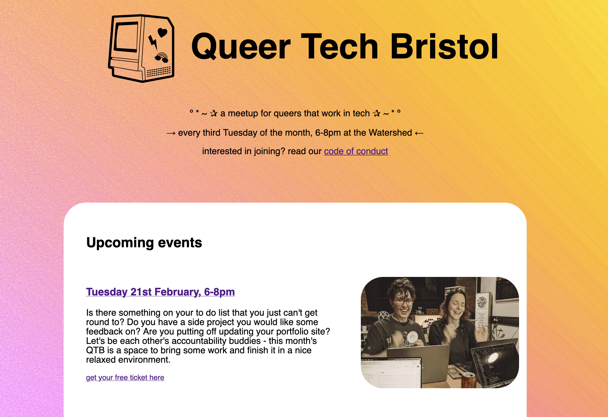

I make interactive art, tools and apps that aim to delight and inspire people.
If you'd like to collaborate on a project, please get in touch :)
current projects
-
www.poem.garden
art project
Can a website be a garden? This was the question I set out to answer during a month-long artists residency with Container Magaziner and Control Shift.
The outcome so far has been DIY server/HTMl poem at www.poem.garden, a talk and an essay, a zine, and a podcast
-

Queer Tech Bristol
community event
I'm co-running a monthly meetup for queers who work with technology.
We want to make space for radical, empowering and nurturing conversation (and also just chilling out and chatting).
-
Machine Streams
community event
I'm part of a collective/movement organising artist's workshops and projects in Bristol - this year's theme is Queering AI.
past interactives
-
Stories in Movement
React Web App
I built this audio web experience for artist Matilde Gouin, as part of the Festival of Emergence 2021.
The user is invited to take a walk (either literally or metaphorically) while they listen to a curated audioscape. The piece included location tracking for the artist to use the waypaths created by users.
-
Escape Bed
Oculus Go VR
Sometimes it's really difficult to get out of bed in the morning… Escape Bed is part point-and-click adventure, part child-like exploration of the liminal space between dreaming and awake. Explore, prod and poke this colourful little vignette until you are ready to throw back the duvet and begin your day.
Exhibited at Open City Docs September 2019. Made in Unity for the Oculus Go, this is my second solo VR piece. I learnt a great deal about 3D modelling and crafting an experience without relying (too much) on words to tell a story.
Unfortunately it's not possible to play this at the moment because the hardware and software is out of date :(